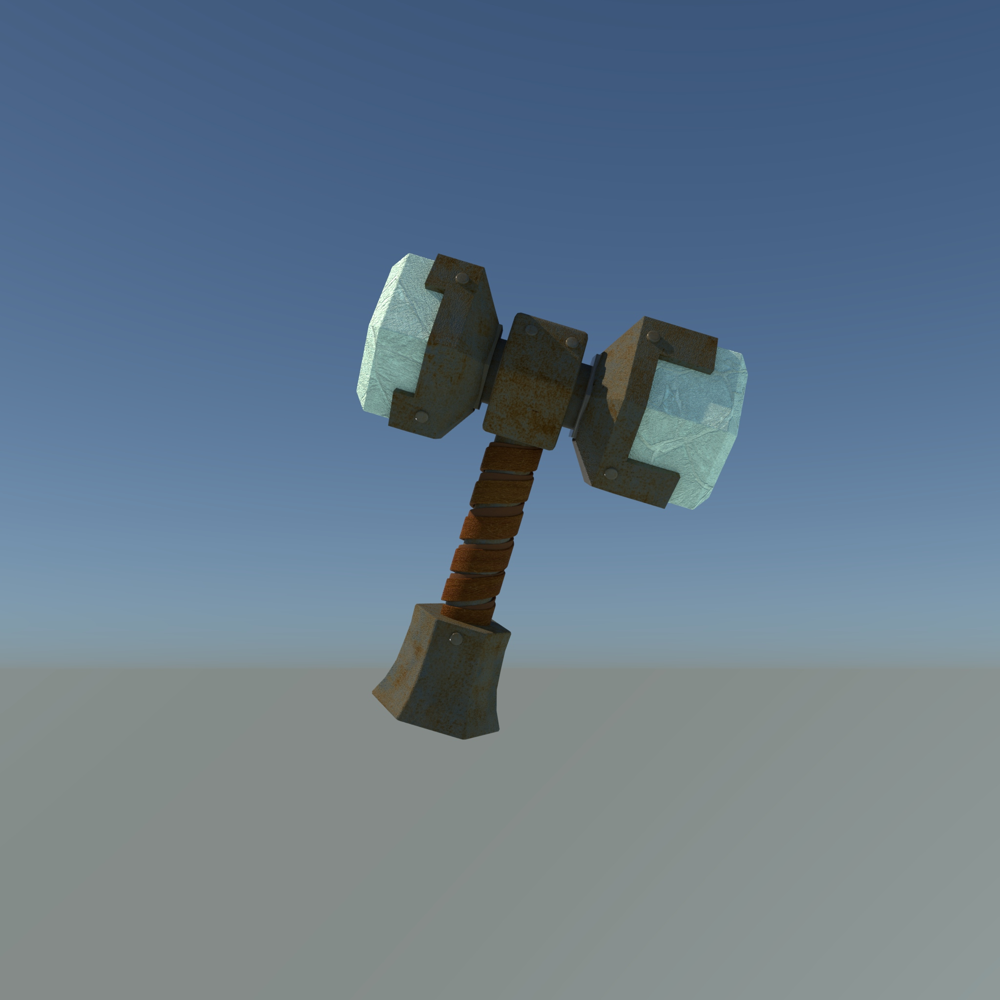

동사 1. 거미가 거미줄을 치다. 2. (비유적으로) 칭칭 감다. Whitewashed walls and steel-gray machines and girls in flowered skirts skipping back and forth, and the whole things webbed with flowing white lines stringing the factory together. 하얗게 표백된 담장과 금속같은 잿빛의 기계들 그리고 펄럭이는 치마를 입은 소녀. 그 공장의 모든 것이 하얗게 휘날리는 선에 한 데 묶여 있었다. (켄 키지, 뻐꾸기 둥지 위로 날아간 새)
단락을 나누기 위해서 Html에서 구글 검색엔진을 사용한다 html paragraph tag br tag와는 달리 단락을 나눌 수 있다.